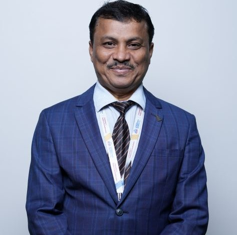

Prof. Suryakant Karande
Assistant Professor

Assistant Professor
Suryakant Karande is a dedicated and self-motivated educator with a strong background in computer applications and sciences. He holds a Master of Computer Applications (M.C.A.) degree from Govt College of Engineering, Karad, and a Bachelor of Science (B.Sc.) degree in Mathematics from Yashwantrao Chavan College of Science, Karad. Currently, he is pursuing a Ph.D. from Savitribai Phule Pune University (SPPU).
With solid expertise in programming and information technology, Mr. Karande is proficient in multiple operating systems including Windows XP, Windows 2000, and Windows 98. His programming skills span SQL, Oracle, Python, and the .NET Framework. He is also experienced in web technologies such as PHP, JavaScript, HTML, DHTML, and CSS, and well-versed in databases including MySQL, Oracle, and MS Access. Furthermore, he has practical knowledge of hardware assembling, installation, troubleshooting, and server management using Apache 3.23.
Throughout his career, he has held several important roles, including serving as officiating Principal, managing all college operations smoothly during the absence of the principal. Since April 2021, he has been leading the BBA (Computer Applications) department as the Head of Department. Additionally, he has contributed significantly as an NSS Program Officer, organizing numerous community service activities, including special week-long camps in rural areas.
He has also headed Criteria II (Teaching-Learning Process) during the college’s NAAC accreditation process, demonstrating his commitment to academic quality and continuous improvement. As the College Admission Cell Coordinator for the past five years, Mr. Karande efficiently managed admission processes, especially during the COVID-19 pandemic, implementing innovative strategies to ensure smooth operations.
With two years of experience as a placement coordinator, he has successfully facilitated campus placements and arranged multiple training programs for students, supporting their career development.